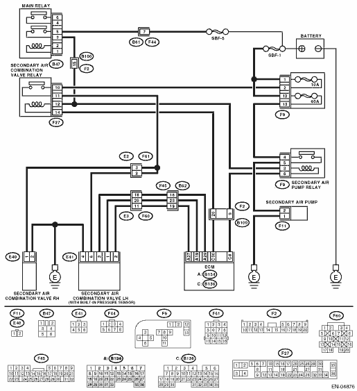
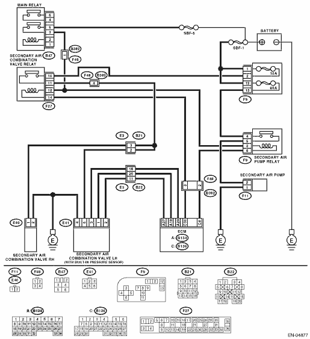
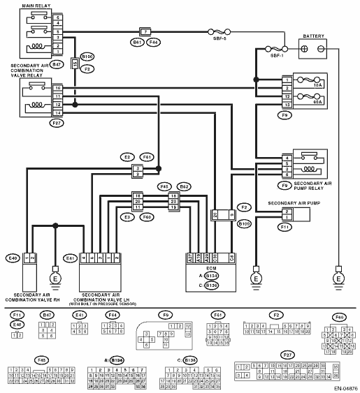
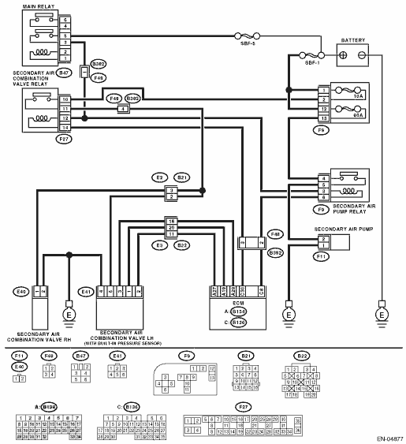

DTC DETECTING CONDITION:
Immediately at fault recognition
CAUTION:
After repairing or replacing the defective part, perform the Clear Memory Mode  and Inspection Mode .
and Inspection Mode .
WIRING DIAGRAM:
• LHD model


• RHD model

ENGINE (DIAGNOSTICS)(H4DOTC) > Diagnostic Procedure with Diagnostic Trouble Code (DTC)
DTC P1418 SECONDARY AIR INJECTION SYSTEM CONTROL “A” CIRCUIT SHORTED
DTC DETECTING CONDITION:
Immediately at fault recognition
CAUTION:
After repairing or replacing the defective part, perform the Clear Memory Mode and Inspection Mode .
WIRING DIAGRAM:
• LHD model

• RHD model
